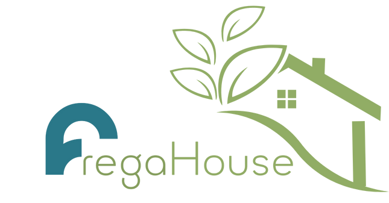

Stratégie de marque
Clarifier ce que vous êtes, pour qui, et pourquoi on devrait vous choisir.
- Positionnement
- Naming & identité
- Charte graphique
- Ton de voix
Stratégie de marque, communication et intégration de l'IA. Un partenaire unique pour concevoir, produire et livrer votre projet — sans multiplier les prestataires.
Entre l'identité, le site, les contenus, les réseaux et maintenant l'IA, les chantiers se multiplient — et les prestataires aussi. Horizon Digital réunit tout ça sous une seule responsabilité : la mienne.
Vous parlez directement à la personne qui conçoit et qui produit. Pas d'intermédiaire, pas de devis qui gonfle.
Pas de gadget. J'utilise l'IA pour produire plus vite et automatiser ce qui vous coûte du temps chaque semaine.
À chaque étape vous savez ce que vous obtenez et quand. Vous repartez autonome, avec les clés en main.
des projets engagés menés jusqu'à la mise en ligne
Selon là où vous en êtes, on démarre par la marque, par la visibilité, par l'acquisition — ou par l'automatisation.
Clarifier ce que vous êtes, pour qui, et pourquoi on devrait vous choisir.
Dire les bonnes choses, au bon endroit, avec régularité.
Un site qui vous ressemble, qu'on trouve et qui convertit.
Gagner des heures chaque semaine sur ce qui est répétitif.
Trois exemples de ce que je mets en place — mesurables dès le premier mois.
Une ligne éditoriale et des modèles de prompts calibrés sur votre ton de voix : vos publications passent de deux heures à vingt minutes, sans perdre votre voix.
Vos formulaires, e-mails et messages entrants sont triés, qualifiés et routés automatiquement. Vous ne traitez plus que ce qui mérite votre attention.
Simulateurs, modèles de devis et séquences de relance automatisés — comme le simulateur tarifaire que j'ai codé pour Le Jardin du Repos.
Vous savez à tout moment où en est le projet, ce qui arrive ensuite et ce que vous recevez à la fin.
On définit le besoin réel, l'objectif et le périmètre. Gratuit et sans engagement.
Direction, contenu, planning. Rien ne démarre avant votre validation écrite.
Je réalise, avec des points d'étape réguliers pour garder le cap.
Passation complète : fichiers sources, accès, documentation. Vous êtes autonome.
Chaque projet est allé jusqu'au bout : mise en ligne, premiers clients, passation.

Marque immobilière créée de A à Z : naming des gammes Gaïa & Lumina, identité, site et supports salon. Livrée en 30 jours.
Service d'entretien de sépultures cofondé et lancé : concept, marque, site et simulateur tarifaire codé main. Premier client signé.
Application dédiée à la recherche d'alternance. Pivot produit assumé et coordination d'une équipe de 12 personnes.
0sites
Sites conçus et mis en ligne
De la première maquette à la passation complète.
0marques
Marques créées de A à Z
Positionnement, naming, identité visuelle et premiers supports.
0interlocuteur
Vous parlez à celui qui livre
Pas d'intermédiaire, pas de perte d'information entre les étapes.
Pour une marque, un site, une stratégie de contenu ou une automatisation : oui, et c'est même un avantage — rien ne se perd entre les intervenants. Quand un projet demande une compétence que je n'ai pas (motion design lourd, développement applicatif complexe), je le dis au cadrage et je m'entoure du bon profil.
Trois choses mesurables : de la vitesse sur la production de contenu, de l'automatisation sur les tâches répétitives (tri des demandes, relances, devis), et de la constance dans votre communication. Je commence toujours par un audit des tâches automatisables — s'il n'y a rien à gagner, je vous le dis.
Chaque projet étant différent, je travaille sur devis après un premier échange de cadrage — gratuit et sans engagement. Vous repartez avec une estimation claire : périmètre, planning, budget. Vous décidez ensuite, sans pression.
Une identité de marque complète demande 3 à 5 semaines. Un site vitrine, 4 à 8 semaines selon l'ampleur. Une automatisation IA se met en place en 1 à 2 semaines. Le planning est arrêté pendant le cadrage, avant toute production.
Oui. Je suis basé entre Marseille et Aix-en-Provence, où je rencontre volontiers les clients quand c'est utile. Mais la majorité des projets se mènent très bien en visio avec des points d'étape réguliers — la géographie n'a jamais bloqué une livraison.
Vous recevez tous les fichiers sources, les accès et une documentation de passation. Vous êtes autonome pour faire vivre le projet. Si vous préférez déléguer le suivi, on met en place un accompagnement mensuel — mais ce n'est jamais imposé.
Un premier échange gratuit, sans engagement, pour comprendre votre besoin et voir concrètement comment je peux vous aider.